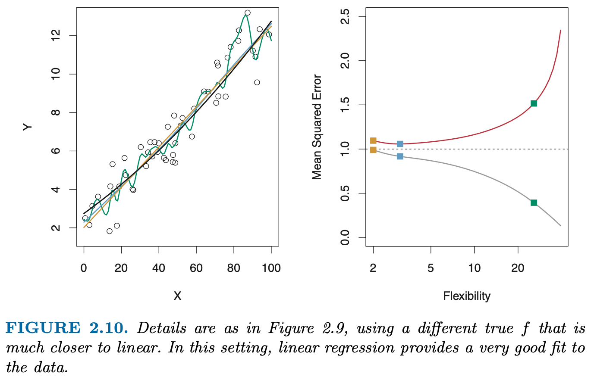
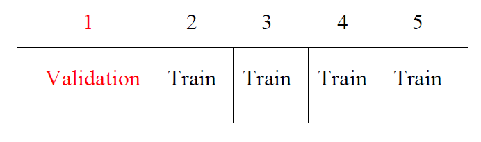
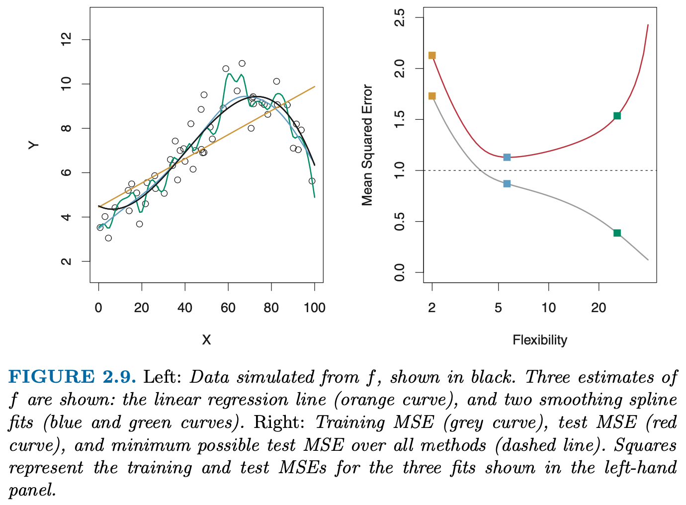

import numpy as np
import pandas as pd
import matplotlib.pyplot as plt
import seaborn as sns
import sklearn13 Sample Splitting
This challenge is based on the Boston data.
Fit “the biggest model” (multiple linear regression) that you possibly can (including interactions and categorical variables).
Dependent Variable:
MEDVWhoever achieves the highest \(R^2\) wins :)
Find the best fit
Dataset Description:
The Boston house-price data of Harrison, D. and Rubinfeld, D.L. ‘Hedonic prices and the demand for clean air’.
Features Description: - CRIM: per capita crime rate by town - ZN: proportion of residential land zoned for lots over 25,000 sq.ft. - INDUS: proportion of non-retail business acres per town - CHAS: Charles River dummy variable (= 1 if tract bounds river; 0 otherwise) - NOX: nitric oxides concentration (parts per 10 million) - RM: average number of rooms per dwelling - AGE: proportion of owner-occupied units built prior to 1940 - DIS: weighted distances to five Boston employment centres - RAD: index of accessibility to radial highways - TAX: full-value property-tax rate per 10,000 dollars - PTRATIO: pupil-teacher ratio by town - BLACK: 1000(Bk - 0.63)^2 where Bk is the proportion of blacks by town - LSTAT: percentage lower status of the population - MEDV: Median value of owner-occupied homes in 1000’s dollars
boston = pd.read_csv('./data/Boston.csv')
# independent variables
X = boston.drop('medv', axis=1)
# dependent variable
y = boston['medv']
print(boston.shape)
boston.head()| crim | zn | indus | chas | nox | rm | age | dis | rad | tax | ptratio | black | lstat | medv | |
|---|---|---|---|---|---|---|---|---|---|---|---|---|---|---|
| 0 | 0.00632 | 18.0 | 2.31 | 0 | 0.538 | 6.575 | 65.2 | 4.0900 | 1 | 296 | 15.3 | 396.90 | 4.98 | 24.0 |
| 1 | 0.02731 | 0.0 | 7.07 | 0 | 0.469 | 6.421 | 78.9 | 4.9671 | 2 | 242 | 17.8 | 396.90 | 9.14 | 21.6 |
| 2 | 0.02729 | 0.0 | 7.07 | 0 | 0.469 | 7.185 | 61.1 | 4.9671 | 2 | 242 | 17.8 | 392.83 | 4.03 | 34.7 |
| 3 | 0.03237 | 0.0 | 2.18 | 0 | 0.458 | 6.998 | 45.8 | 6.0622 | 3 | 222 | 18.7 | 394.63 | 2.94 | 33.4 |
| 4 | 0.06905 | 0.0 | 2.18 | 0 | 0.458 | 7.147 | 54.2 | 6.0622 | 3 | 222 | 18.7 | 396.90 | 5.33 | 36.2 |
boston.describe()| crim | zn | indus | chas | nox | rm | age | dis | rad | tax | ptratio | black | lstat | medv | |
|---|---|---|---|---|---|---|---|---|---|---|---|---|---|---|
| count | 506.000000 | 506.000000 | 506.000000 | 506.000000 | 506.000000 | 506.000000 | 506.000000 | 506.000000 | 506.000000 | 506.000000 | 506.000000 | 506.000000 | 506.000000 | 506.000000 |
| mean | 3.613524 | 11.363636 | 11.136779 | 0.069170 | 0.554695 | 6.284634 | 68.574901 | 3.795043 | 9.549407 | 408.237154 | 18.455534 | 356.674032 | 12.653063 | 22.532806 |
| std | 8.601545 | 23.322453 | 6.860353 | 0.253994 | 0.115878 | 0.702617 | 28.148861 | 2.105710 | 8.707259 | 168.537116 | 2.164946 | 91.294864 | 7.141062 | 9.197104 |
| min | 0.006320 | 0.000000 | 0.460000 | 0.000000 | 0.385000 | 3.561000 | 2.900000 | 1.129600 | 1.000000 | 187.000000 | 12.600000 | 0.320000 | 1.730000 | 5.000000 |
| 25% | 0.082045 | 0.000000 | 5.190000 | 0.000000 | 0.449000 | 5.885500 | 45.025000 | 2.100175 | 4.000000 | 279.000000 | 17.400000 | 375.377500 | 6.950000 | 17.025000 |
| 50% | 0.256510 | 0.000000 | 9.690000 | 0.000000 | 0.538000 | 6.208500 | 77.500000 | 3.207450 | 5.000000 | 330.000000 | 19.050000 | 391.440000 | 11.360000 | 21.200000 |
| 75% | 3.677083 | 12.500000 | 18.100000 | 0.000000 | 0.624000 | 6.623500 | 94.075000 | 5.188425 | 24.000000 | 666.000000 | 20.200000 | 396.225000 | 16.955000 | 25.000000 |
| max | 88.976200 | 100.000000 | 27.740000 | 1.000000 | 0.871000 | 8.780000 | 100.000000 | 12.126500 | 24.000000 | 711.000000 | 22.000000 | 396.900000 | 37.970000 | 50.000000 |
boston.corr()| crim | zn | indus | chas | nox | rm | age | dis | rad | tax | ptratio | black | lstat | medv | |
|---|---|---|---|---|---|---|---|---|---|---|---|---|---|---|
| crim | 1.000000 | -0.200469 | 0.406583 | -0.055892 | 0.420972 | -0.219247 | 0.352734 | -0.379670 | 0.625505 | 0.582764 | 0.289946 | -0.385064 | 0.455621 | -0.388305 |
| zn | -0.200469 | 1.000000 | -0.533828 | -0.042697 | -0.516604 | 0.311991 | -0.569537 | 0.664408 | -0.311948 | -0.314563 | -0.391679 | 0.175520 | -0.412995 | 0.360445 |
| indus | 0.406583 | -0.533828 | 1.000000 | 0.062938 | 0.763651 | -0.391676 | 0.644779 | -0.708027 | 0.595129 | 0.720760 | 0.383248 | -0.356977 | 0.603800 | -0.483725 |
| chas | -0.055892 | -0.042697 | 0.062938 | 1.000000 | 0.091203 | 0.091251 | 0.086518 | -0.099176 | -0.007368 | -0.035587 | -0.121515 | 0.048788 | -0.053929 | 0.175260 |
| nox | 0.420972 | -0.516604 | 0.763651 | 0.091203 | 1.000000 | -0.302188 | 0.731470 | -0.769230 | 0.611441 | 0.668023 | 0.188933 | -0.380051 | 0.590879 | -0.427321 |
| rm | -0.219247 | 0.311991 | -0.391676 | 0.091251 | -0.302188 | 1.000000 | -0.240265 | 0.205246 | -0.209847 | -0.292048 | -0.355501 | 0.128069 | -0.613808 | 0.695360 |
| age | 0.352734 | -0.569537 | 0.644779 | 0.086518 | 0.731470 | -0.240265 | 1.000000 | -0.747881 | 0.456022 | 0.506456 | 0.261515 | -0.273534 | 0.602339 | -0.376955 |
| dis | -0.379670 | 0.664408 | -0.708027 | -0.099176 | -0.769230 | 0.205246 | -0.747881 | 1.000000 | -0.494588 | -0.534432 | -0.232471 | 0.291512 | -0.496996 | 0.249929 |
| rad | 0.625505 | -0.311948 | 0.595129 | -0.007368 | 0.611441 | -0.209847 | 0.456022 | -0.494588 | 1.000000 | 0.910228 | 0.464741 | -0.444413 | 0.488676 | -0.381626 |
| tax | 0.582764 | -0.314563 | 0.720760 | -0.035587 | 0.668023 | -0.292048 | 0.506456 | -0.534432 | 0.910228 | 1.000000 | 0.460853 | -0.441808 | 0.543993 | -0.468536 |
| ptratio | 0.289946 | -0.391679 | 0.383248 | -0.121515 | 0.188933 | -0.355501 | 0.261515 | -0.232471 | 0.464741 | 0.460853 | 1.000000 | -0.177383 | 0.374044 | -0.507787 |
| black | -0.385064 | 0.175520 | -0.356977 | 0.048788 | -0.380051 | 0.128069 | -0.273534 | 0.291512 | -0.444413 | -0.441808 | -0.177383 | 1.000000 | -0.366087 | 0.333461 |
| lstat | 0.455621 | -0.412995 | 0.603800 | -0.053929 | 0.590879 | -0.613808 | 0.602339 | -0.496996 | 0.488676 | 0.543993 | 0.374044 | -0.366087 | 1.000000 | -0.737663 |
| medv | -0.388305 | 0.360445 | -0.483725 | 0.175260 | -0.427321 | 0.695360 | -0.376955 | 0.249929 | -0.381626 | -0.468536 | -0.507787 | 0.333461 | -0.737663 | 1.000000 |
Additive Models first
#import statsmodel and sklearn Library
import sklearn.linear_model as skl_lm
import statsmodels.formula.api as smf
# Create a Baseline Multiple Linear Regression
est = smf.ols('medv ~ lstat + black + ptratio ', boston).fit()
est.summary().tables[1]
y_pred = est.predict()
sklearn.metrics.r2_score(y, y_pred)0.6098453143448523# Create a Multiple Linear Regression with all columns
est = smf.ols('medv ~ lstat + black + ptratio + tax + rad + dis + age + rm + nox +chas + indus + zn +crim ', boston).fit()
est.summary().tables[1]
y_pred = est.predict()
sklearn.metrics.r2_score(y, y_pred)0.7406426641094095# Try out with Variables which have a higher correlation with medv (> 0.3)
est = smf.ols('medv ~ lstat + black + ptratio + tax + rad + age + rm + nox + indus + zn +crim ', boston).fit()
y_pred = est.predict()
sklearn.metrics.r2_score(y, y_pred)0.7062733492875524Interactions
Find Variables which correlate and add their Interactions to the model
# add Interactions between Variables
est = smf.ols('medv ~ lstat + black + ptratio + tax + rad + dis + age + rm + nox +chas + indus + zn +crim + rad * crim + crim * tax + dis * zn + chas * indus + nox * indus + age * indus + dis * indus + rad * indus + tax * indus + lstat * indus + nox * dis + nox * age + nox * rad + nox * tax + rm * lstat + age * dis + age * lstat + rad * tax', boston).fit()
y_pred = est.predict()
sklearn.metrics.r2_score(y, y_pred)0.8276188554359157Find the Categorical Variables and dummify
print('rad: ' , boston['rad'].nunique())
print('zn: ' ,boston['zn'].nunique())
print('indus: ' ,boston['indus'].nunique())
print('chas: ' ,boston['chas'].nunique())
print('dis: ' ,boston['dis'].nunique())
print('tax: ' ,boston['tax'].nunique())rad: 9
zn: 26
indus: 76
chas: 2
dis: 412
tax: 66# add Categoricals rad and chas
est = smf.ols('medv ~ lstat + black + ptratio + tax + C(rad) + dis + age + rm + nox + C(chas) + indus + zn + crim + crim * zn + crim * indus + crim * chas + crim * nox + crim *rm + crim * age + crim * dis + crim * rad + crim * tax + crim * ptratio + crim * black + crim * lstat + zn * indus + zn * chas + zn * nox + zn * rm + zn * age + zn * dis + zn * rad + zn * tax + zn * ptratio + zn * black + zn * lstat + indus * chas + indus * nox + indus * rm + indus * age + indus * dis + indus * rad + indus * tax + indus * ptratio + indus * black + indus * lstat + chas * nox + chas * rm + chas * age + chas * dis + chas * rad + chas * tax + chas * ptratio + chas * black + chas * lstat + nox * rm + nox * age + nox * dis + nox * rad + nox * tax + nox * ptratio + nox * black + nox * lstat + rm * age + rm * dis + rm *rad + rm * tax + rm * ptratio + rm *black + rm * lstat + age * dis + age * rad + age * tax + age * ptratio + age * black + age * lstat + dis * rad + dis * tax + dis *ptratio + dis * black + dis * lstat + rad * tax + rad * ptratio + rad * black + rad * lstat + tax * ptratio + tax * black + tax * lstat + black * lstat ', boston).fit()
y_pred = est.predict()
sklearn.metrics.r2_score(y, y_pred)0.9247310711792476most likely Overfitted Model with \(R^2\) of 0.92
The perfect fit
Maximal Overfitted Model all predicting Variables as Categories + all possible Relationships
est = smf.ols('medv ~ C(lstat) + C(black) + C(ptratio) + C(tax) + C(rad) + C(dis) + C(age) + C(rm) + C(nox) + C(chas) + C(indus) + C(zn) + C(crim) + crim * zn + crim * indus + crim * chas + crim * nox + crim *rm + crim * age + crim * dis + crim * rad + crim * tax + crim * ptratio + crim * black + crim * lstat + zn * indus + zn * chas + zn * nox + zn * rm + zn * age + zn * dis + zn * rad + zn * tax + zn * ptratio + zn * black + zn * lstat + indus * chas + indus * nox + indus * rm + indus * age + indus * dis + indus * rad + indus * tax + indus * ptratio + indus * black + indus * lstat + chas * nox + chas * rm + chas * age + chas * dis + chas * rad + chas * tax + chas * ptratio + chas * black + chas * lstat + nox * rm + nox * age + nox * dis + nox * rad + nox * tax + nox * ptratio + nox * black + nox * lstat + rm * age + rm * dis + rm *rad + rm * tax + rm * ptratio + rm *black + rm * lstat + age * dis + age * rad + age * tax + age * ptratio + age * black + age * lstat + dis * rad + dis * tax + dis *ptratio + dis * black + dis * lstat + rad * tax + rad * ptratio + rad * black + rad * lstat + tax * ptratio + tax * black + tax * lstat + black * lstat ', boston).fit()
y_pred = est.predict()
sklearn.metrics.r2_score(y, y_pred)1.0Train Test Split
How do we quantify the notion of overfitting, i.e. the (obvious?) impression that the model is “too wiggly”, or too complex ?
The \(R^2\) on the data we used to fit the model is useless for this purpose because it seems to only improve the more complex the model becomes!
One useful idea seems the following: if the orange line does not really capture the “true model”, i.e. has adapted too much to the noise, its performance on a test set would be worse than a simpler model.

Let us examine this idea by using a Train Test Split
from sklearn.metrics import mean_squared_error
from sklearn.model_selection import train_test_split
#from sklearn.linear_model import LinearRegression
boston.head()| crim | zn | indus | chas | nox | rm | age | dis | rad | tax | ptratio | black | lstat | medv | |
|---|---|---|---|---|---|---|---|---|---|---|---|---|---|---|
| 0 | 0.00632 | 18.0 | 2.31 | 0 | 0.538 | 6.575 | 65.2 | 4.0900 | 1 | 296 | 15.3 | 396.90 | 4.98 | 24.0 |
| 1 | 0.02731 | 0.0 | 7.07 | 0 | 0.469 | 6.421 | 78.9 | 4.9671 | 2 | 242 | 17.8 | 396.90 | 9.14 | 21.6 |
| 2 | 0.02729 | 0.0 | 7.07 | 0 | 0.469 | 7.185 | 61.1 | 4.9671 | 2 | 242 | 17.8 | 392.83 | 4.03 | 34.7 |
| 3 | 0.03237 | 0.0 | 2.18 | 0 | 0.458 | 6.998 | 45.8 | 6.0622 | 3 | 222 | 18.7 | 394.63 | 2.94 | 33.4 |
| 4 | 0.06905 | 0.0 | 2.18 | 0 | 0.458 | 7.147 | 54.2 | 6.0622 | 3 | 222 | 18.7 | 396.90 | 5.33 | 36.2 |
- Compute the \(R^2\) for the test portion
- Compare with the adjusted \(R^2\).
- Think about the model complexity parameter in OLS.
- How would one choose which variables should be part of the model?
train, test = train_test_split(boston, test_size = 0.1, random_state=45)
y_train = train["medv"]
y_test = test["medv"]
#will be useful later
X_train = train.drop("medv", axis=1)
X_test = test.drop("medv", axis=1)#Repeat one of the earlier amazing fits:
formula = 'medv ~ lstat + black + ptratio + tax + C(rad) + dis + age + rm + nox + C(chas) + indus + zn + crim + crim * zn + crim * indus + crim * chas + crim * nox + crim *rm + crim * age + crim * dis + crim * rad + crim * tax + crim * ptratio + crim * black + crim * lstat + zn * indus + zn * chas + zn * nox + zn * rm + zn * age + zn * dis + zn * rad + zn * tax + zn * ptratio + zn * black + zn * lstat + indus * chas + indus * nox + indus * rm + indus * age + indus * dis + indus * rad + indus * tax + indus * ptratio + indus * black + indus * lstat + chas * nox + chas * rm + chas * age + chas * dis + chas * rad + chas * tax + chas * ptratio + chas * black + chas * lstat + nox * rm + nox * age + nox * dis + nox * rad + nox * tax + nox * ptratio + nox * black + nox * lstat + rm * age + rm * dis + rm *rad + rm * tax + rm * ptratio + rm *black + rm * lstat + age * dis + age * rad + age * tax + age * ptratio + age * black + age * lstat + dis * rad + dis * tax + dis *ptratio + dis * black + dis * lstat + rad * tax + rad * ptratio + rad * black + rad * lstat + tax * ptratio + tax * black + tax * lstat + black * lstat '
est = smf.ols(formula, train).fit()
y_pred_train = est.predict()
y_pred_test = est.predict(X_test)
R2_train = sklearn.metrics.r2_score(y_train, y_pred_train)
R2_test = sklearn.metrics.r2_score(y_test, y_pred_test)
print("train R2:", R2_train)
print("test R2:", R2_test)
MSE_test = mean_squared_error(y_test, y_pred_test)
MSE_train = mean_squared_error(y_train, y_pred_train)
print("MSE_train:", MSE_train)
print("MSE_test:", MSE_test)train R2: 0.9274106134480603
test R2: 0.871592468610564
MSE_train: 5.96861557537797
MSE_test: 13.241124958441453Cross Validation
Drawbacks of validation set approach
- The validation estimate of the test error can be highly variable, depending on precisely which observations are included in the training/validation set.
- In the validation approach, only a subset of the observations - those that are included in the training set rather than in the validation set - are used to fit the model.
- This suggests that the validation set error may tend to overestimate the test error for the model fit on the entire data set.
K-fold Cross-validation
- randomly divide the data into K equal-sized parts. We leave out part k, fit the model to the other K-1 parts (combined), and then obtain predictions for the left-out kth part.
- This is done in turn for each part \(k = 1,2, \ldots, K\), and then the results are combined.

Design Matrix
Get to know your friendly helper library patsy
from patsy import dmatrices
y_0, X_wide = dmatrices(formula, boston)#, return_type='dataframe')
X_wide.shape(506, 99)Scoring Metrics
Model selection and evaluation using tools, such as model_selection.GridSearchCV and model_selection.cross_val_score, take a scoring parameter that controls what metric they apply to the estimators evaluated.
Find the options here
from sklearn.model_selection import cross_val_score
reg_all = LinearRegression()
#The unified scoring API always maximizes the score,
# so scores which need to be minimized are negated in order for the unified scoring API to work correctly.
cv_results = cross_val_score(reg_all, X_wide, y_0, cv=10, scoring='neg_mean_squared_error')
print("CV results: ", -cv_results)
print("CV results mean: ", np.mean(-cv_results))CV results: [ 24.61090588 10.30866313 62.18781304 44.2004828 107.53306211
17.14942076 18.69173435 241.76832017 148.09771969 40.90216317]
CV results mean: 71.54502851092425Comments
- For non-equal fold sizes, we need to compute the weighted mean!
- Setting \(K = n\) yields n-fold or leave-one out cross-validation (LOOCV).
- With least-squares linear or polynomial regression, an amazing shortcut makes the cost of LOOCV the same as that of a single model fit! The following formula holds:
\[ CV_n = \frac{1}{n} \sum{\left( \frac{y_i - \hat{y}_i}{1-h_i} \right)^2} \]
where \(\hat{y}_i\) is the ith fitted value from the original least squares fit, and \(h_i\) is the leverage (see ISLR book for details.) This is like the ordinary MSE, except the ith residual is divided by \(1-h_i\).
Task
- Sketch the code for your own CV function.
- Reproduce the left panel of Fig. 5.6, i.e. the right panel of Fig 2.9 from the ISLR book
